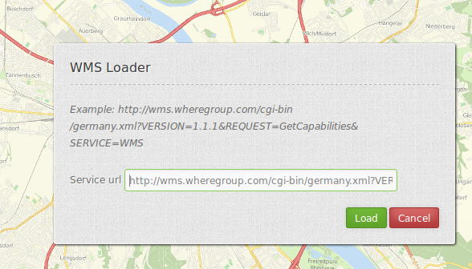

WMS Loader¶
Mit diesem Element können WMS per getCapabilities-Request geladen werden. Es kann WMS 1.1.1 und WMS 1.3.0 geladen werden.
{kind=link}
Konfiguration¶
{kind=link}
- Auto open: true, wenn das Element beim Start der Anwendung geöffnet werden soll, der Standardwert ist false.
- Split layers: geteilte Ebenen beim Laden des Dienstes, Standard ist false.
- Use declarative: erlaubt einen Dienst über einen Link zu laden (zum Beispiel über die Informationsabfrage oder Suche) und definiert die Layer zu aktivieren, Standard ist false.
- Title: Titel des Elements. Dieser wird in der Layouts Liste angezeigt und ermöglicht, mehrere Button-Elemente voneinander zu unterscheiden. Der Titel wird außerdem neben dem Button angezeigt, wenn “Beschriftung anzeigen” aktiviert ist.
- Tooltip: Text, der angezeigt wird, wenn der Mauszeiger eine längere Zeit über dem Element verweilt.
- Target: ID des Kartenelements, auf das sich das Element bezieht.
- Defaultformat: Standard Format ist image/png, weitere Möglichkeiten: image/gif, image/jpeg.
- Defaultinfoformat: Standard Infoformat ist text/html, weitere Möglichkeiten: text/xml, text/plain.
YAML-Definition:¶
target: ~ # ID des Kartenelements
tooltip: 'WMS Loader' # Text des Tooltips
autoOpen: false # true, wenn das Element beim Start der Anwendung geöffnet werden soll, der Standardwert ist false.
defaultFormat: 'image/png' # Standard Format ist image/png, weitere Möglichkeiten: image/gif, image/jpeg
defaultInfoFormat: 'text/html' # Standard Infoformat ist text/html, weitere Möglichkeiten: text/xml, text/plain
splitLayers: false # geteilte Ebenen beim Laden des Dienstes, Standard ist false
useDeclarative: false # erlaubt einen Dienst über einen Link zu laden (zum Beispiel über die Informationsabfrage oder Suche)
# und definiert die Layer zu aktivieren, Standard ist false
Für das Element wird ein Button verwendet. Siehe unter button für die Konfiguration.
Hinzufügen eines WMS über einen definierten Link¶
Mapbender kann ein WMS über einen definierten Link hinzugefügt werden, z.B. zum Beispiel über die Informationsabfrage oder über Suchergebnisse.
Stellen Sie useDeclarative in der mapbender.yml auf true oder stellen Sie in diesem Element auf useDeclarative
Der Link sollte folgendermaßen aussehen:
<a mb-action="source.add.wms" mb-layer-merge="1" mb-wms-merge="1"
mb-wms-layers="Gewaesser,Fluesse"
href="http://wms.wheregroup.com/cgi-bin/germany.xml?VERSION=1.1.1&REQUEST=GetCapabilities&SERVICE=WMS">load service</a>
<a mb-action="source.add.wms" mb-layer-merge="1" mb-wms-merge="1"
mb-wms-layers="Gewaesser,Fluesse"
mb-url="http://wms.wheregroup.com/cgi-bin/germany.xml?VERSION=1.1.1&REQUEST=GetCapabilities&SERVICE=WMS" href="">load service</a>
mb-action="source.add.wms" # definiert die Aktion, um einen WMS hinzuzufügen
mb-wms-merge="1" # fügt den WMS nur einmal hinzu, wenn der WMS in der Applikation bereits Bestandteil ist, wird dieser verwendet (Standard ist 1)
mb-layer-merge="1" # Standard ist 1: aktiviert die Ebene in mb-wms-layers. Deaktiviert die Ebenen nicht, die schon aktiviert sind.
mb-wms-layers="Gewaesser,Fluesse" # Definiert die Ebenen, die aktiviert werden sollen, _all activates aktiviert alle Ebenen. Standard ist alle Ebenen sind deaktiviert.
href oder mb-url # verweist auf die WMS getcapabilities URL
Class, Widget & Style¶
- Class: Mapbender\WmsBundle\Element\WmsLoader
- Widget:
- Style:
HTTP Callbacks¶
Keine.
JavaScript API¶
activate¶
Öffnet einen Dialog, in dem ein WMS über einen getCapabilities-Request geladen werden kann. Es kann WMS 1.1.1 und WMS 1.3.0 geladen werden.
JavaScript Signals¶
Keine.